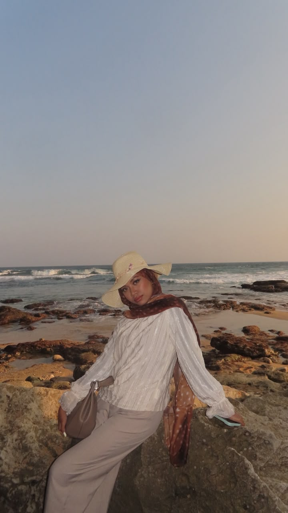

Mathematics Student

I'm an Undergraduate Mathematics Student at Universitas Airlangga (UNAIR) passionate about web development, algorithm optimization, and data exploration. I love building interactive, functional, and clean web applications.
While I'm driven by curiosity and continuous learning, I enjoy solving real-world challenges through code, mathematical optimization, and intuitive UI design.
Experience & Leadership
A quick journey through my organizational roles, sponsorships, and university events 🚀
Sponsor Division Member — GERDES (Gerbang Desa) Jilid XI
Responsible for seeking and securing event sponsorships and partnerships. Personally pitched and successfully secured PT Pupuk Indonesia as an official sponsor to support the community development program.
Secretariat Division Member — PEMABA HIMATIKA 2025
Designed visual needs for new Mathematics students (class books, ID cards, name tags, attendance lists) and managed student orientation data.
Sponsor Division Member — Get To Know to Airlangga
Formulated sponsorship proposals, negotiated with media partners and potential sponsors. Successfully secured Coca-Cola as an event sponsor.
Sponsor Division Member — Dekan Cup FST 2025
Pitched and negotiated event sponsorship proposals across sports and arts competitions. Successfully secured Telkomsel as an official sponsor.
Sponsor Division Member — Reformafest FST 2025
Created attractive proposals and pitched to potential media partners and sponsors to support high school debate & seminar events focusing on SDGs.
Group Facilitator Member — PENDEKAR FST 2025
Guided and facilitated new FST students through character development programs, acting as the primary liaison between students and the committee.
Sponsor Division Member — Abdi Desa Rawatungga
Executed creative fundraising initiatives (merchandise sales, open donation) and secured Cheers Brand as a community sponsor for Tuban village outreach.
Featured Projects
Web applications & tools built with code and logic 🚀
Church Donor Management Web
Web AppA web application built to organize, track, and manage donor contributions and record keeping efficiently.
MBG Menu Optimization Web
Web AppCalculates and optimizes MBG (Makan Bergizi Gratis) menu combinations using mathematical optimization algorithms.
Tower of Hanoi Game Visualizer
Game & AlgoInteractive web simulation of the classic Tower of Hanoi puzzle, demonstrating Data Structures (Stack) and Recursion.
Let’s Build Something Together
Whether you have a project in mind, a question about mathematical optimization, or just want to say hi — feel free to drop a message!
Have an idea or project?
I'm always open to discussing web application development, data exploration, or potential mentorship and event opportunities.